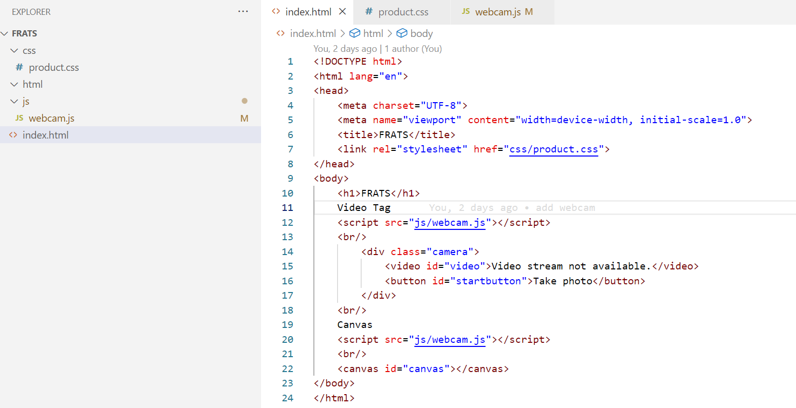
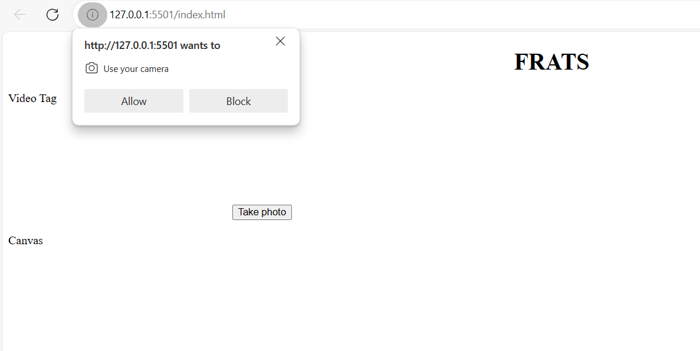
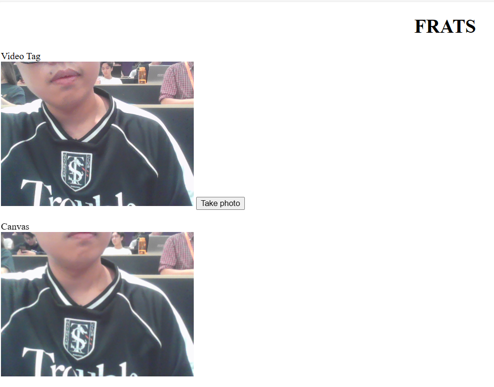

| week - 1 | week - 2 | week - 3 | week - 4 | week - 5 | |
For the week 2 we have decide to keep with our last week idea.
But since we do not have a camera yet so we decide to use our laptop or phone camera first.
So we have create a git repository that can help us to work togther. First of all I thave
create a very basic html website that can use the laptop camera and take a picture


